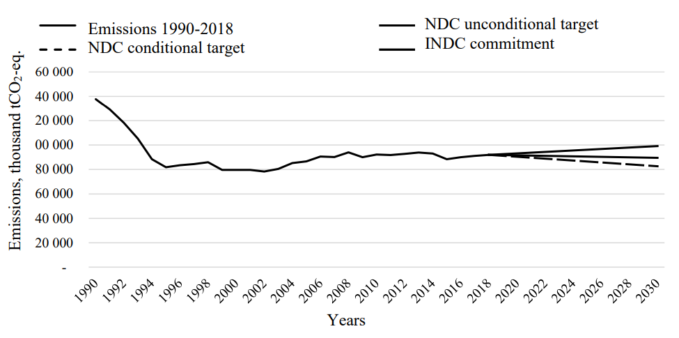
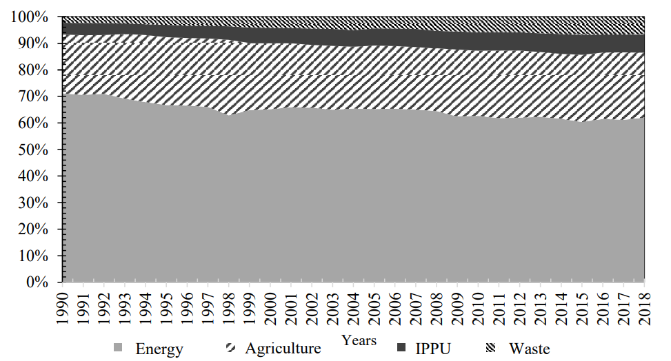
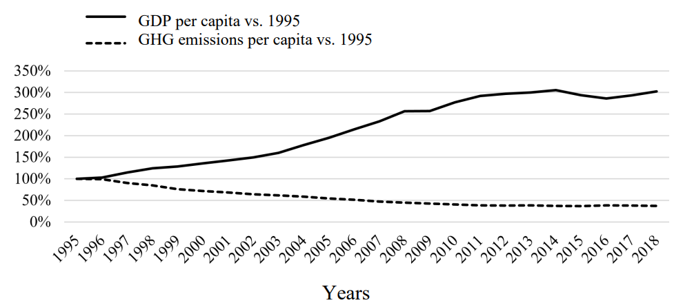

NATIONALLY DETERMINED CONTRIBUTION
of the Republic of Belarus to the reduction of greenhouse gas emissions until 2030
Pursuant to Article 4 of the Paris Agreement, the NDC makes provision for the commitment of the Republic of Belarus to reduce greenhouse gas emissions by 2030 with due regard for the timeframe for updating greenhouse gas emissions targets according to paragraph 9 of this Article and further guidance in relation to the mitigation section of Decision 1/CP.21 dealing with climate change mitigation (hereinafter Guidance), adopted in 2018 by Decision 4/CMA.1 of the Conference of the Parties to the United Nations Framework Convention on Climate Change of May 9, 1992 (hereinafter referred to as Framework Convention) serving as the meeting of the Parties to the Paris Agreement.
The Republic of Belarus supports the collective efforts of the Parties to the Paris Agreement aimed at keeping the increase in global average temperature to well below 2 degrees Celsius above pre-industrial levels, and is making efforts to limit its increase to 1.5 degrees Celsius, which is consistent with the goal of the Paris Agreement.
In its Intended Nationally Determined Contribution to reduce greenhouse gas emissions (hereinafter referred to as “INDC”), in accordance with the position approved by the Decree of the President of the Republic of Belarus of November 16, 2015 No. 461, the Republic of Belarus committed to reduce greenhouse gas emissions by at least 28 per cent by 2030 as compared to the 1990 level, excluding the Land Use, Land-Use Change and Forestry sector (hereinafter referred to as “LULUCF”) and without any additional conditions. The commitment did not imply using international carbon market mechanisms or mobilizing foreign financial resources for the implementation of the best available technologies.
The Republic of Belarus intends to make a more ambitious contribution in the global response to climate change and sets economy-wide unconditional and conditional greenhouse gas emissions reduction targets.
Taking into account the economic situation and the country's capabilities, the new unconditional economy-wide target is to reduce greenhouse gas emissions by at least 35 per cent from the 1990 level by 2030, inclusive of the LULUCF sector.
The new conditional economy-wide target is to reduce greenhouse gas emissions by at least 40 per cent from the 1990 level by 2030, inclusive of the LULUCF sector and subject to using international financing mechanisms to introduce the best available technologies for achieving greenhouse gas emissions reduction.
The dynamics of greenhouse gas emissions exclusive of the LULUCF sector during 1990-2018 and the commitment until 2030 are shown in Figure 1.

Figure 1. Greenhouse gas emissions in 1990-2018 and commitment until 2030
The year 1990 is the base year for determining the target for reducing greenhouse gas emissions until 2030. The level of greenhouse gas emissions in 1990 was 137.8 million tonnes of CO2-eq. exclusive of the LULUCF sector, and 117.2 million tonnes of CO2-eq. inclusive of the LULUCF sector.
The type of commitment is the absolute reduction of greenhouse gas emissions until 2030 as compared to the base year emissions, inclusive of the LULUCF sector.
The unconditional target is to reduce greenhouse gas emissions by at least 35 per cent.
The conditional target is to reduce greenhouse gas emissions by at least 40 per cent.
The year 2018 was chosen as the base year for generating emission projections and accounting for greenhouse gas reduction policy and measures until 2030.
The basic data sources for making greenhouse gas emission projections are the National Inventory Report on anthropogenic emissions by sources and removals by sinks of all greenhouse gases not controlled by the Montreal Protocol of September 16, 1987 (hereinafter referred to as “National Inventory Report”) for 1990 - 2018; the Fourth Biennial Report of the Republic of Belarus (2019); and the national communications of the Republic of Belarus according to the commitments under the Framework Convention.
The greenhouse gas inventory process is being continuously improved, which may lead to changes in the time-series indicators, including the base year of 1990.
The projected greenhouse gas emissions were calculated following the 2006 Intergovernmental Panel on Climate Change (hereinafter referred to as “IPCC”) Guidelines for National Greenhouse Gas Inventories and the parameters used in the preparation of inventories of anthropogenic emissions by sources and removals by sinks of greenhouse gases.
The target will be achieved during the period from January 1, 2021 to December 31, 2030.
The year 2030 is set as the target year for the commitment to reduce greenhouse gas emissions, taking into account the National Strategy for Sustainable Socio- Economic Development of the Republic of Belarus until 2030 adopted by the Executive Committee of the Council of Ministers of the Republic of Belarus (minutes of the meeting on May 2, 2017, No. 10).
Achievement of the target will be monitored in the Biennial Transparency Reports submitted by the Republic of Belarus, National Communications and other reporting documents in accordance with the Paris Agreement and the decisions adopted by the Conference of the Parties.
The NDC includes economic sectors and categories of anthropogenic emissions by sources and removal by sinks consistent with those contained in the National GHG Inventory Report for 1990-2018, INDC, and the 2006 IPCC Guidelines for National Greenhouse Gas Inventories (hereinafter referred to as “Guidelines”).
Taking into account the national methodology and the reporting requirements stipulated in the Guidelines, the commitments of the Republic of Belarus refer to greenhouse gas emissions in the following sectors: Energy, Industrial Processes and Product Use (hereinafter referred to as “IPPU”), Agriculture, Waste, and LULUCF.
The LULUCF sector was not included in the INDC due to high uncertainty in the methodology of estimating greenhouse gas emissions and removals. This sector is included in the NDC, considering its potential as a carbon dioxide sink and all possible risks.
Maximum greenhouse gas emissions are associated with fuel combustion and other processes in the Energy sector, which accounts for 62 per cent of the total greenhouse gas emissions in 2018. The Agriculture sector accounts for 24 per cent of the total greenhouse gas emissions; the IPPU and Waste sectors account each for 7 per cent in 2018.
Data on the absolute emissions in the listed sectors exclusive of the LULUCF sector is given in Figure 2.

Figure 2. Dynamics of greenhouse gas emissions by sector
The commitments of the Republic of Belarus are related to the reduction of the emissions of the following greenhouse gases: carbon dioxide, methane, nitrous oxide, hydrofluorocarbons, perfluorocarbons, sulphur hexafluoride.
The major greenhouse gas in Belarus is carbon dioxide. In 2018, the share of carbon dioxide was 67.3 per cent of the total greenhouse gas emissions (exclusive of net sinks in the LULUCF sector), the share of methane was 17.5 per cent, and the share of nitrous oxide was 15.2 per cent.
Emissions of hydrofluorocarbons and sulphur hexafluoride are negligible at 0.0038 per cent of the total greenhouse gas emissions.
Pursuant to paragraph 31 (c) of Decision 1/CP.21 by the Conference of Parties to the Framework Convention, the Republic of Belarus included the LULUCF sector in the NDC and continues to make efforts to identify all categories of sources and sinks of anthropogenic emissions, as well as to assess emissions in the sources that are currently not accounted for in the NDC.
The geographic coverage coincides with the geopolitical borders of the country.
During the establishment of the NDC, the implementation of climate change adaptation measures was not taken into account.
Pursuant to Article 4 of the Paris Agreement, the Republic of Belarus pledged to submit an NDC every five years to the Secretariat of the Framework Convention, and pursuant to Article 14 of the Paris Agreement, the global stocktake outcome is used to inform the NDCs.
The climate change legislation of the Republic of Belarus is governed by the laws of the Republic of Belarus of November 26, 1992, No. 1982-XII “On Environmental Protection”, of January 9, 2006, No. 93-Z “On Hydrometeorological Activities”, of December 16, 2008, No. 2-Z “On the Protection of Atmospheric Air”, of December 27, 2010, No. 204-Z “On Renewable Energy Sources”, of January 8, 2015, No. 239-Z “On Energy Saving” and other regulatory legal acts.
Key approaches in the field of sustainable forest management, which make it possible to preserve their ecological and economic balance, are laid down in the Forest Code of the Republic of Belarus and the Strategic Plan for the Development of the Forestry Sector for 2015-2030 approved by the Deputy Prime Minister of the Republic of Belarus on December 23, 2014, No. 06/201 271.
Pursuant to the Decree of the President of the Republic of Belarus No. 345 of September 20, 2016 “On the Adoption of an International Treaty”, the Ministry of Natural Resources and Environmental Protection of the Republic of Belarus (hereinafter referred to as “MNREP”) was designated as the body responsible for the implementation of the commitments undertaken by the country under the Paris Agreement.
As part of the implementation of the Paris Agreement, the national climate policy is being improved. The policy is focused on the country's sustainable development, and the reduction of the energy intensity and carbon intensity of the national economy, including with due regard for the implementation of Resolution 70/1 - Transforming our world: the 2030 Agenda for Sustainable Development - adopted by the United Nations General Assembly on September 25, 2015.
The Concept of the National Security of the Republic of Belarus adopted the Decree of the President of the Republic of Belarus No. 575 of November 9, 2010, the Concept of Energy Security of the Republic of Belarus adopted by the Resolution of the Council of Ministers of the Republic of Belarus No. 1084 of December 23, 2015, the Action Plan for the Implementation of the Provisions of the Paris Agreement to the United Nations Framework Convention on Climate Change, approved by Deputy Prime Minister of the Republic of Belarus, No. 06/214-53/160 of March 13, 2019 are being implemented.
The NDC will be achieved in accordance with the Strategy for Environmental Protection of the Republic of Belarus until 2025 and as part of the implementation of the following:
Socio-Economic Development Programme of the Republic of Belarus for 2021-2025 adopted by the Decree of the President of the Republic of Belarus No. 292 of July 29, 2021;
State Programme “Environmental Protection and Sustainable Use of Natural Resources” for 2021-2025 adopted by the Resolution of the Council of Ministers of the Republic of Belarus of February 19, 2021, No. 99;
State Programme “Energy Saving” for 2021-2025 adopted by the Resolution of the Council of Ministers of the Republic of Belarus of February 19, 2021, No. 103;
State Programme “Belarusian Forest” for 2021-2025 adopted by the Resolution of the Council of Ministers of the Republic of Belarus of January 28, 2021, No. 52;
State Programme “Comfortable Housing and Favourable Living Environment” for 2021-2025 adopted by the Resolution of the Council of Ministers of the Republic of the Republic of Belarus of January 28, 2021, No. 50;
State Programme “Transport System” for 2021-2025 adopted by the Resolution of the Council of Ministers of the Republic of Belarus of March 23, 2021, No. 165;
State Programme “Agribusiness” for 2021-2025 adopted by the Resolution of the Council of Ministers of the Republic of Belarus of February 1, 2021, No. 59.
A roadmap was developed for the implementation of the NDC in the Republic of Belarus with due consideration for the global trends and national context of Belarus, which contains actions for the five-year period as well as longer-term activities.
The NDC will be the basis for the development of the Long-term Low Greenhouse Gas Emission Development Strategy of the Republic of Belarus until 2050 in terms of heat and electricity generation, and improving energy efficiency in the IPPU, construction, housing and utility, and transport sectors.
Work has started in the Republic of Belarus to establish a system for assessing climate risks and risks related to hazardous weather events, which makes it possible to analyse vulnerability to climate change and to provide recommendations for adaptation.
Strategic documents on the adaptation of individual economic sectors to climate change are being developed. In 2022, the National Action Plan for Climate Adaptation will be developed.
In accordance with Decision 24/CP.19 of the Conference of the Parties to the Framework Convention, the following sources were used to formulate the NDC:
IPCC Guidelines;
the Fourth Assessment Report of the IPCC of 2007;
GHG inventory data from the National GHG Inventory Report of the Republic of Belarus for 1990-2018;
official data from central government bodies and other state-owned organizations subordinate to the Government of the Republic of Belarus, and other organizations for the year 2018;
findings of research and development;
scientific and research-and-practice publications.
Detailed information on the methodology used for the preparation of the NDC with the description of projected greenhouse gas emissions per main source categories, the main factors affecting emission levels, and the indicators required for assessing progress towards the stated target of reducing greenhouse gas emissions for each of the sectors is published on the official website of the MNREP on the Internet. In accordance with Decision 18/CMA.1 of the Conference of the Parties serving as the meeting of the Parties to the Paris
Agreement, such an assessment will be carried out by December 31, 2024, when the Republic of Belarus submits a progress report on the NDC implementation.
The new economy-wide target of the Republic of Belarus, in comparison with the INDC target, provides for a further reduction of greenhouse gas emissions by an additional 7-12 per cent, which, in view of the economic situation and the country's capabilities, is the evidence of a more ambitious contribution.
The Republic of Belarus - an Annex I Party to the Framework Convention - is a transition economy, whose per capita gross domestic product (hereinafter referred to as “GDP”) is lower compared to most Annex I Parties to the Framework Convention. In this regard, the Republic of Belarus has a limited ability to mobilize additional investment in low-carbon technologies and innovations. Thus, the target of ensuring the reduction of emissions by 35 per cent as compared to the 1990 level inclusive of the LULUCF sector is optimal in the current socio-economic context.
The average annual GDP growth rate in 1995-2018 was 4.9 per cent, and the average annual increase in greenhouse gas emissions over the same period was

Figure 3. Dynamics of greenhouse gas emissions and GDP in 1995-2018
In future, the Republic of Belarus intends to reduce the carbon intensity of its economy and raise its ambition in the next cycle of NDC reporting informed by the global stocktake 2023.